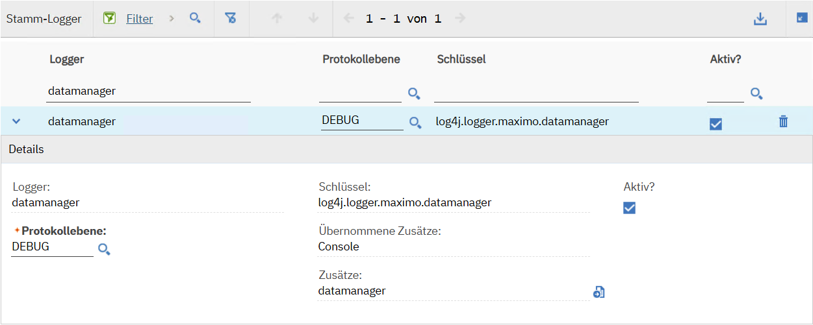

Logging
Maximex uses the Maximo logger maximo.datamanager for diagnostic output.
Required settings
To enable debug logging, configure both the logger in the Logging application and the system property for the import history:
| Configuration | Name | Required value |
|---|---|---|
| Logger in the Logging application | datamanager |
DEBUG |
| System property | EAM.Importer.DebugLog |
true |
The logger configuration enables the plugin's debug output. The system property enables debug logging in the import history. Both settings are required; changing only one does not complete the configuration.
Configure the logger
Open the Maximo Logging application and find the datamanager logger.
Set Log Level to DEBUG and make sure Active? is selected. Save the configuration.
The logger identifiers are:
| Field | Value |
|---|---|
| Logger shown in the application | datamanager |
| Logger name used in the Java code | maximo.datamanager |
| Logger key | log4j.logger.maximo.datamanager |

The datamanager logger configured at DEBUG in the Maximo user interface.
Use the datamanager logger for this configuration; the Java logger name and the logger key identify the same logger in their respective contexts.
Enable debug logging in the import history
Open the Maximo System Properties application and find:
EAM.Importer.DebugLog
Set its value to true and save the change. This setting enables debug logging in the import history and must be used together with the DEBUG logger configuration described above.
Where to find the log file
The name maximo.datamanager identifies a logger, not a file. Its assigned and inherited appenders determine where messages are written. A Console appender writes to the server's console output; a file appender writes to its configured file. The logger name alone does not establish a fixed path such as datamanager.log. See IBM's explanation of log appenders.
Default console log on traditional WebSphere
When Maximo runs on traditional IBM WebSphere Application Server with basic file-based JVM logging and the Console appender writing to standard output, check SystemOut.log on the application server. The default location is:
<WAS_PROFILE_ROOT>/logs/<SERVER_NAME>/SystemOut.log
<WAS_PROFILE_ROOT> is the directory of the WebSphere profile, and <SERVER_NAME> is the application server running Maximo. For example, a Windows installation might use:
C:\IBM\WebSphere\AppServer\profiles\ctgAppSrv01\logs\MXServer\SystemOut.log
This is an example, not a required installation path. The installation directory, profile name, server name, and configured log location can differ. IBM documents the default directory and how to change it in Configuring log location and size.
In a clustered environment, inspect the log of the server that actually processed the import. The file is on that server, not on the workstation used to upload the spreadsheet. For another application server, a container deployment, or a different logging mode, use that environment's configured console-log location instead of assuming the WebSphere path applies.
Separate file for the datamanager appender
To find the location of a separately configured file:
- In Logging, use Manage Appenders to inspect the
datamanagerappender. Check its implementation class and, for a file appender, its File Name. Do not assume that the appender name is also the file name. - Use Set Logging Root Folder to inspect the directory configured for Maximo's file appenders. This is separate from the WebSphere JVM-log directory described above. IBM describes this setting in Simplified procedure to generate Maximo log.
- On the server that processed the import, check the configured folder for the corresponding file. Depending on the implementation, Maximo file appenders can add the server name to the configured file name; see IBM's log appender overview.
If you change logger or appender settings, save them and execute Apply Settings in the Logging application so the changes take effect, as described in the IBM configuration procedure.
The server log and the import history are separate places to inspect diagnostics. For import-specific debug information in the import history, also enable EAM.Importer.DebugLog as described above.